| Date | Summary | Aim | Plate | Plate contents | Wash Number | Control Plate | Plate pouring | Plate spreading/making | Plate contents autoclaved | Bleach concentration percentage | Bleach notes | Treatment code. | Flies code (sex/strain). | Number of flies | Replicate ID | Incubation time (hours) | Incubation temp celsius | Date plate read | Short description of plate | % of plate covered in bacteria | Colony morphology | Image link | Researcher(s) | Link to protocol and Benchling lab note entry |
|---|---|---|---|---|---|---|---|---|---|---|---|---|---|---|---|---|---|---|---|---|---|---|---|---|
| 15/09/2025 | Fly washed in bleach for 1 minute then PBS for 30s. PBS wash plated out | Test differential growth of bacteria across 3 consecutive PBS washes | LB | PBS wash | 1 | No | Lab bench next to bunsen | Lab bench next to bunsen | Yes. | 0.8 | Stock bleach was 6-14% calculation assumed upper concentration valid. Stock of unknown age and likely to be less concentrated than stated | 15_09_25_1_1 | starch_male_6d | 1 | 1 | 24 | 37 | 16/09/2025 | One small blodge of growth. As well as sharp white colonies, blodged together. | |20 | |Single colonies/lawn | |IMG_5710.jpg | |Katie Millar | |15.09.2025_SS_labnotes |
| 15/09/2025 | Fly washed in bleach for 1 minute then PBS for 30s. PBS wash plated out | Test differential growth of bacteria across 3 consecutive PBS washes | LB | PBS wash | 2 | No | Lab bench next to bunsen | Lab bench next to bunsen | Yes. | 0.8 | Stock bleach was 6-14% calculation assumed upper concentration valid. Stock of unknown age and likely to be less concentrated than stated | 15_09_25_1_2 | starch_male_6d | 1 | 1 | 24 | 37 | 16/09/2025 | A very large blodge of growth in the center. Lots of colonies blodged together. | |25 | |Single colonies/lawn | |IMG_5711.jpg | |Katie Millar | |15.09.2025_SS_labnotes |
| 15/09/2025 | Fly washed in bleach for 1 minute then PBS for 30s. PBS wash plated out | Test differential growth of bacteria across 3 consecutive PBS washes | LB | PBS wash | 3 | No | Lab bench next to bunsen | Lab bench next to bunsen | Yes. | 0.8 | Stock bleach was 6-14% calculation assumed upper concentration valid. Stock of unknown age and likely to be less concentrated than stated | 15_09_25_1_3 | starch_male_6d | 1 | 1 | 24 | 37 | 16/09/2025 | Maybe some lines of growth, hard to tell. | 10 | N/A | IMG_5712.jpg | Katie Millar | 15.09.2025_SS_labnotes |
| 15/09/2025 | Fly washed in bleach for 1 minute then PBS for 30s. PBS wash plated out | Test differential growth of bacteria across 3 consecutive PBS washes | LB | PBS wash | 1 | No | Lab bench next to bunsen | Lab bench next to bunsen | Yes. | 0.8 | Stock bleach was 6-14% calculation assumed upper concentration valid. Stock of unknown age and likely to be less concentrated than stated | 15_09_25_2_1 | starch_female_6d | 4 | 1 | 24 | 37 | 16/09/2025 | No growth. | 0 | N/A | IMG_5705.jpg | Katie Millar | 15.09.2025_SS_labnotes |
| 15/09/2025 | Fly washed in bleach for 1 minute then PBS for 30s. PBS wash plated out | Test differential growth of bacteria across 3 consecutive PBS washes | LB | PBS wash | 2 | No | Lab bench next to bunsen | Lab bench next to bunsen | Yes. | 0.8 | Stock bleach was 6-14% calculation assumed upper concentration valid. Stock of unknown age and likely to be less concentrated than stated | 15_09_25_2_2 | starch_female_6d | 4 | 1 | 24 | 37 | 16/09/2025 | No growth. | 0 | N/A | IMG_5706.png | Katie Millar | 15.09.2025_SS_labnotes |
| 15/09/2025 | Fly washed in bleach for 1 minute then PBS for 30s. PBS wash plated out | Test differential growth of bacteria across 3 consecutive PBS washes | LB | PBS wash | 3 | No | Lab bench next to bunsen | Lab bench next to bunsen | Yes. | 0.8 | Stock bleach was 6-14% calculation assumed upper concentration valid. Stock of unknown age and likely to be less concentrated than stated | 15_09_25_2_3 | starch_female_6d | 4 | 1 | 24 | 37 | 16/09/2025 | Large splodge of growth. Lots of small growth slodges surrounding this. Some streaks. | 20 | Lawn colonies. | IMG_5707.png | Katie Millar | 15.09.2025_SS_labnotes |
| 15/09/2025 | Sterile PBS only plated, no flies introduced at any time. | Tests that the sterile PBS used for rinsing does not contain bactria. | LB | PBS control | N/A | Yes | Lab bench next to bunsen | Lab bench next to bunsen | Yes. | 0.8 | NA | 15_09_25_3_1 | N/A | N/A | 1 | 24 | 37 | 16/09/2025 | No growth. | 0 | N/A | IMG_5709.png | Katie Millar | 15.09.2025_SS_labnotes |
| 15/09/2025 | Fly submerged in PBS for 30s. PBS wash plated out | Tests if a plate will pick up dirty PBS | LB | PBS wash | 1 | Yes | Lab bench next to bunsen | Lab bench next to bunsen | No. | 0.8 | Stock bleach was 6-14% calculation assumed upper concentration valid. Stock of unknown age and likely to be less concentrated than stated | 15_09_25_3_2 | starch_male_6d | 1 | 1 | 24 | 37 | 16/09/2025 | No growth. | 0 | N/A | IMG_5708.png | Katie Millar | 15.09.2025_SS_labnotes |
| 18/09/2025 | Fly washed in bleach for 1 minute then PBS for 30s. PBS wash plated out | Test differential growth of bacteria in PBS before and after bleach. Specifically tests the effiency of old bleach. Replicates are two drops of the same wash. | LB | PBS wash | 1 | No | Lab bench next to bunsen | Lab bench next to bunsen | Yes. | 0.8 | Stock bleach was 6-14% calculation assumed upper concentration valid. Stock of unknown age and likely to be less concentrated than stated | 18_09_25_1_1 | asg_female_10d | 4 | 1 | 24 | 37 | 19/09/2025 | Large splodge of growth in the centre. Leaks out to the side. | 50 | Lawn colonies. | IMG_5713.png | Katie Millar | 18_09_2025_SS_labnotes |
| 18/09/2025 | Fly washed in bleach for 1 minute then PBS for 30s. PBS wash plated out | Test differential growth of bacteria in PBS before and after bleach. Specifically tests the effiency of old bleach. Replicates are two drops of the same wash. | LB | PBS wash | 1 | No | Lab bench next to bunsen | Lab bench next to bunsen | Yes. | 0.8 | Stock bleach was 6-14% calculation assumed upper concentration valid. Stock of unknown age and likely to be less concentrated than stated | 18_09_25_1_2 | asg_female_10d | 4 | 2 | 24 | 37 | 19/09/2025 | No growth. | 0 | N/A | IMG_5714.png | Katie Millar | 18_09_2025_SS_labnotes |
| 18/09/2025 | Fly washed in bleach for 1 minute then PBS for 30s. PBS wash plated out | Test differential growth of bacteria in PBS before and after bleach. Specifically tests the effiency of new bleach. | LB | PBS wash | 1 | No | Lab bench next to bunsen | Lab bench next to bunsen | Yes. | 0.8 | Stock bleach was 10-15% calculation assumed middle concentration valid. Stock was 1 day old. | 18_09_25_2_1 | asg_male_10d | 4 | 1 | 24 | 37 | 19/09/2025 | No growth. | 0 | N/A | IMG_5715.png | Katie Millar | 18_09_2025_SS_labnotes |
| 18/09/2025 | Fly washed in bleach for 1 minute then PBS for 30s. PBS wash plated out | Test differential growth of bacteria in PBS before and after bleach. Specifically tests the effiency of new bleach. | LB | PBS wash | 1 | No | Lab bench next to bunsen | Lab bench next to bunsen | Yes. | 0.8 | Stock bleach was 10-15% calculation assumed middle concentration valid. Stock was 1 day old. | 18_09_25_2_2 | asg_male_10d | 4 | 1 | 24 | 37 | 19/09/2025 | No growth. | 0 | N/A | IMG_5716.png | Katie Millar | 18_09_2025_SS_labnotes |
| 18/09/2025 | Unwashed fly submerged in PBS for 30s, PBS wash plated. | Tests if a plate will pick up dirty PBS | LB | PBS wash | 1 | No | Lab bench next to bunsen | Lab bench next to bunsen | No. | 0.8 | NA | 18_09_25_3_1 | N/A | N/A | 1 | 24 | 37 | 19/09/2025 | No growth. | 0 | N/A | NA | Katie Millar | 18_09_2025_SS_labnotes |
| 18/09/2025 | Unwashed fly submerged in PBS for 30s, PBS wash plated. | Tests if a plate will pick up dirty PBS | LB | PBS wash | 1 | No | Lab bench next to bunsen | Lab bench next to bunsen | No. | 0.8 | Stock bleach was 10-15% calculation assumed middle concentration valid. Stock was 1 day old. | 18_09_25_3_2 | N/A | N/A | 1 | 24 | 37 | 19/09/2025 | No growth. | 0 | N/A | NA | Katie Millar | 18_09_2025_SS_labnotes |
| 18/09/2025 | Sterile PBS only plated, no flies introduced at any time. | Tests if a plate will pick up dirty PBS | LB | PBS wash | N/A | No | Lab bench next to bunsen | Lab bench next to bunsen | Yes. | 0.8 | Stock bleach was 10-15% calculation assumed middle concentration valid. Stock was 1 day old. | 18_09_25_4_1 | N/A | N/A | 1 | 24 | 37 | 19/09/2025 | No growth. | 0 | N/A | IMG_5717.png | Katie Millar | 18_09_2025_SS_labnotes |
| 18/09/2025 | Sterile PBS only plated, no flies introduced at any time. | Tests if a plate will pick up dirty PBS | LB | PBS wash | N/A | No | Lab bench next to bunsen | Lab bench next to bunsen | Yes. | 0.8 | Stock bleach was 10-15% calculation assumed middle concentration valid. Stock was 1 day old. | 18_09_25_4_2 | N/A | N/A | 1 | 24 | 37 | 19/09/2025 | No growth. | 0 | N/A | IMG_5718.png | Katie Millar | 18_09_2025_SS_labnotes |
| 18/09/2025 | Dirty fly spread directly over plate. | Tests if LB plate specifically picks up bacteria, directly from fly contact. | LB | Fly reminiscence. | N/A | No | Lab bench next to bunsen | Lab bench next to bunsen | No. | 0.8 | NA | 18_09_25_4_2 | N/A | N/A | 1 | 24 | 37 | 19/09/2025 | Bacteria almost completely covering the plate. | 80 | NA | IMG_5719.png | Katie Millar | 18_09_2025_SS_labnotes |
| 23/09/2025 | Fly washed in bleach for 1 minute then PBS for 30s, then another PBS rinse. PBS is then plated out. | Tests if bleach causes surface sterilisation, and if they are still sterile by the 2nd PBS rinse. | LB | PBS wash | 2 | No | Lab bench next to bunsen | Lab bench next to bunsen | Yes. | 0.8 | Stock bleach was 10-15% calculation assumed middle concentration valid. Stock was 5 days old. | 23_09_25_1_1 | N/A | N/A | 1 | 24 | 37 | 24/09/2025 | Medium sized colonies over the plate, and long stripes.. | 50 | Large circles, filamentous | IMG_5728.png | Katie Millar | 23_09_2025_SS_labnnotes |
| 23/09/2025 | Fly washed in bleach for 1 minute then PBS for 30s, then another PBS rinse. PBS is then plated out. | Tests if bleach causes surface sterilisation, and if they are still sterile by the 2nd PBS rinse. | LB | PBS wash | 2 | No | Lab bench next to bunsen | Lab bench next to bunsen | Yes. | 0.8 | Stock bleach was 10-15% calculation assumed middle concentration valid. Stock was 5 days old. | 23_09_25_1_2 | N/A | N/A | 2 | 24 | 37 | 24/09/2025 | Medium sized colonies over the plate, and long streaky stripes.. | 60 | Large circles, filamentous | IMG_5729.png | Katie Millar | 23_09_2025_SS_labnnotes |
| 23/09/2025 | Unwashed fly submerged in PBS for 30s, PBS wash plated. | Tests if PBS will pick up bacteria from the fly. | LB | PBS wash | 1 | No | Lab bench next to bunsen | Lab bench next to bunsen | No. | 0.8 | NA | 23_09_25_2_1 | asg_male_2d | N/A | 1 | 24 | 37 | 24/09/2025 | One or two very small colonies | 3 | Tiny colonies | IMG_5730.png | Katie Millar | 23_09_2025_SS_labnnotes |
| 23/09/2025 | Unwashed fly submerged in PBS for 30s, PBS wash plated. | Tests if PBS will pick up bacteria from the fly. | LB | PBS wash | 1 | No | Lab bench next to bunsen | Lab bench next to bunsen | No. | 0.8 | NA | 23_09_25_2_2 | asg_male_2d | N/A | 2 | 24 | 37 | 24/09/2025 | No growth. | 0 | N/A | IMG_5731.png | Katie Millar | 23_09_2025_SS_labnnotes |
| 23/09/2025 | Bleached fly put into PBS for 30 seconds. | Tests if bleach kills bacteria on the surface of the fly. | LB | PBS wash | 1 | No | Lab bench next to bunsen | Lab bench next to bunsen | Yes. | 0.8 | Stock bleach was 10-15% calculation assumed middle concentration valid. Stock was 5 days old. | 23_09_25_2_3 | asg_male_2d | N/A | 1 | 24 | 37 | 24/09/2025 | No growth. | 0 | N/A | IMG_5732.png | Katie Millar | 23_09_2025_SS_labnnotes |
| 23/09/2025 | Bleached fly put into PBS for 30 seconds. | Tests if bleach kills bacteria on the surface of the fly. | LB | PBS wash | 1 | No | Lab bench next to bunsen | Lab bench next to bunsen | Yes. | 0.8 | Stock bleach was 10-15% calculation assumed middle concentration valid. Stock was 5 days old. | 18_09_25_2_4 | asg_male_2d | N/A | 2 | 24 | 37 | 24/09/2025 | No growth. | 0 | N/A | IMG_5733.png | Katie Millar | 23_09_2025_SS_labnnotes |
| 23/09/2025 | Unwashed fly submerged in PBS for 1 minute, PBS wash plated. | Tests if PBS will pick up bacteria from the fly. | LB | PBS wash | 1 | No | Lab bench next to bunsen | Lab bench next to bunsen | No. | 0.8 | NA | 23_09_25_3_1 | asg_male_2d | N/A | 1 | 24 | 37 | 24/09/2025 | Large splodge of growth. | 10 | Circular growth | IMG_5734.png | Katie Millar | 23_09_2025_SS_labnnotes |
| 23/09/2025 | Unwashed fly submerged in PBS for 1 minute, PBS wash plated. | Tests if PBS will pick up bacteria from the fly. | LB | PBS wash | 1 | No | Lab bench next to bunsen | Lab bench next to bunsen | No. | 0.8 | NA | 23_09_25_3_2 | asg_male_2d | N/A | 2 | 24 | 37 | 24/09/2025 | Colonies moprhed together to greate a little shape | 8 | NA | IMG_5735.png | Katie Millar | 23_09_2025_SS_labnnotes |
| 23/09/2025 | Washed fly submerged in PBS for 1 minute, PBS wash plated. | Tests if bleach kills bacteria on the surface of the fly. | LB | PBS wash | 1 | No | Lab bench next to bunsen | Lab bench next to bunsen | Yes. | 0.8 | Stock bleach was 10-15% calculation assumed middle concentration valid. Stock was 5 days old. | 23_09_25_3_3 | asg_male_2d | N/A | 1 | 24 | 37 | 24/09/2025 | Tiny one colony growth | < 1 | Small and circular | IMG_5736.png | Katie Millar | 23_09_2025_SS_labnnotes |
| 23/09/2025 | Washed fly submerged in PBS for 1 minute, PBS wash plated. | Tests if bleach kills bacteria on the surface of the fly. | LB | PBS wash | 1 | No | Lab bench next to bunsen | Lab bench next to bunsen | Yes. | 0.8 | Stock bleach was 10-15% calculation assumed middle concentration valid. Stock was 5 days old. | 18_09_25_3_4 | asg_male_2d | N/A | 2 | 24 | 37 | 24/09/2025 | NA | NA | NA | NA | Katie Millar | 23_09_2025_SS_labnnotes |
| 23/09/2025 | Bleach fly spread directly onto plate. | Tests if LB plate specifically picks up bacteria | LB | Direct fly contact | N/A | No | Lab bench next to bunsen | Lab bench next to bunsen | Yes. | NA | NA | 23_09_25_3_3 | asg_male_2d | 1 | 1 | 24 | 37 | 24/09/2025 | Many splodges of growth with coloies combined together. | 30 | Thick rhizoid shapes. | IMG_5737.png | Katie Millar | 23_09_2025_SS_labnnotes |
| 23/09/2025 | Bleach fly spread directly onto plate. | Tests if LB plate specifically picks up bacteria | LB | Direct fly contact | N/A | No | Lab bench next to bunsen | Lab bench next to bunsen | Yes. | NA | NA | 23_09_25_3_4 | asg_female_2d | 1 | 2 | 24 | 37 | 24/09/2025 | Many splodges of growth with coloies combined together. | 35 | Thick rhizoid shapes. | IMG_5738.png | Katie Millar | 23_09_2025_SS_labnnotes |
| 23/09/2025 | Dirty fly spread directly onto plate. | Tests if LB plate specifically picks up bacteria | LB | Direct fly contact | N/A | No | Lab bench next to bunsen | Lab bench next to bunsen | No. | NA | NA | 23_09_25_4_1 | asg_male_2d | 1 | 1 | 24 | 37 | 24/09/2025 | Large colonies together, splodged. | 25 | Large circles. | IMG_5739.png | Katie Millar | 23_09_2025_SS_labnnotes |
| 23/09/2025 | Dirty fly spread directly onto plate. | Tests if LB plate specifically picks up bacteria | LB | Direct fly contact | N/A | No | Lab bench next to bunsen | Lab bench next to bunsen | No. | NA | NA | 23_09_25_4_2 | asg_female_2d | 1 | 2 | 24 | 37 | 24/09/2025 | Large colonies together, splodged. | 25 | Large circles. | IMG_5740.png | Katie Millar | 23_09_2025_SS_labnnotes |
| 26/09/2025 | Unwashed fly submerged in PBS for 30 seconds, PBS wash plated. | Tests if LB plate specifically picks up bacteria from PBS. | LB | PBS wash | 1 | Yes | Lab bench next to bunsen | Lab bench next to bunsen | No. | 0.8 | Stock bleach was 10-15% calculation assumed middle concentration valid. Stock was 5 days old. | 26_09_25_1_2 | asg_female_ | 3 | 1 | NA | NA | 27/09/2025 | Lots ad lots of tiny colonies | 50 | Tiny colonies | IMG_5764.png | Katie Millar | NA |
| 26/09/2025 | Unwashed fly submerged in PBS for 30 seconds, PBS wash plated. | Tests if LB plate specifically picks up bacteria from PBS. | LB | PBS wash | 1 | Yes | Lab bench next to bunsen | Lab bench next to bunsen | No. | 0.8 | Stock bleach was 10-15% calculation assumed middle concentration valid. Stock was 5 days old. | 26_09_25_1_2 | asg_female_ | 3 | 2 | NA | NA | 27/09/2025 | Large splodges of growth, colonies joined together. Some small colonies. | 25 | Large splodges of joined together colonies. | IMG_5765.png | Katie Millar | NA |
| 26/09/2025 | Fly washed in bleach for 1 minute then PBS for 30s. PBS wash plated out | Tests bacterial growth from one bleach, and one PBS rinse. | LB | PBS wash | 1 | No | Lab bench next to bunsen | Lab bench next to bunsen | Yes. | 0.8 | Stock bleach was 10-15% calculation assumed middle concentration valid. Stock was 5 days old. | 26_09_25_2_1 | asg_female_ | 3 | 1 | NA | NA | 27/09/2025 | One large splodge of joined together colonies, some lighter shadow joined together colonies. | 10 | Large splodges of joined together colonies. | IMG_5768.png | Katie Millar | NA |
| 26/09/2025 | Fly washed in bleach for 1 minute then PBS for 30s. PBS wash plated out | Tests bacterial growth from one bleach, and one PBS rinse. | LB | PBS wash | 1 | No | Lab bench next to bunsen | Lab bench next to bunsen | Yes. | 0.8 | Stock bleach was 10-15% calculation assumed middle concentration valid. Stock was 5 days old. | 26_09_25_2_1 | asg_female_ | 3 | 2 | NA | NA | 27/09/2025 | One small colony | < 1 | Small colony | IMG_5769.png | Katie Millar | NA |
| 26/09/2025 | Just sterile PBS on a plate. No flies. | NA | LB | PBS wash | NA | NA | NA | NA | Yes. | NA | NA | NA | NA | NA | NA | NA | NA | 27/09/2025 | One small colony | < 1 | Small colony | IMG_5771.png | Katie Millar | NA |
| 26/09/2025 | Just sterile PBS on a plate. No flies. | NA | LB | PBS wash | NA | NA | NA | NA | Yes. | NA | NA | NA | NA | NA | NA | NA | NA | 27/09/2025 | Large splodges of growth, colonies joined together. Some small colonies. | 8 | Large splodgs of joined together colonies. | IMG_5770.png | Katie Millar | NA |
| 26/09/2025 | A plain LB plate with nothing on | NA | LB | None. | NA | NA | NA | NA | Yes. | NA | NA | NA | NA | NA | NA | NA | NA | 27/09/2025 | A few small colonies | 1 | Small colony | IMG_5772.png | Katie Millar | NA |
| 26/09/2025 | A plain LB plate with nothing on | NA | LB | None. | NA | NA | NA | NA | Yes. | NA | NA | NA | NA | NA | 2 | NA | NA | 27/09/2025 | No growth. | 0 | N/A | IMG_5773.png | Katie Millar | NA |
| 16/10/2025 | An LB plate, with nothing added. | To test if the LB plates used for the sterility tests are sterile. | LB | None. | N/A | Yes | Under flow hood. | Lab bench next to bunsen. | Yes. | N/A | Stock bleach was 10-15% calculation assumed middle concentration. Stock was 1 day old, solution made on the day. | 16_10_2025_1_1 | NA | N/A | 1 | 24 | 37 | 17/10/2025 | No growth. | 0 | NA | IMG_5741.png | Katie Millar, Emily Fowler | |NA |
| 16/10/2025 | An LB plate, with nothing added. | To test if the LB plates used for the sterility tests are sterile. | LB | None. | N/A | Yes | Under flow hood. | Lab bench next to bunsen. | Yes. | N/A | Stock bleach was 10-15% calculation assumed middle concentration. Stock was 1 day old, solution made on the day. | 16_10_2025_1_2 | NA | N/A | 2 | 24 | 37 | 17/10/2025 | No growth. | 0 | NA | IMG_5742.png | Katie Millar, Emily Fowler | |NA |
| 16/10/2025 | An LB plate, with nothing added. | To test if the LB plates used for the sterility tests are sterile. | LB | None. | N/A | Yes | Under flow hood. | Lab bench next to bunsen. | Yes. | N/A | Stock bleach was 10-15% calculation assumed middle concentration. Stock was 1 day old, solution made on the day. | 16_10_2025_1_3 | NA | N/A | 3 | 24 | 37 | 17/10/2025 | No growth. | 0 | NA | IMG_5743.png | Katie Millar, Emily Fowler | |NA |
| 16/10/2025 | Bleach solution (no flies added) plated on an LB plate. | To test the bleach is sterile, as the solution is made. | LB | Bleach | N/A | Yes | Under flow hood. | Lab bench next to bunsen. | Yes. | 0.8 | Stock bleach was 10-15% calculation assumed middle concentration. Stock was 1 day old, solution made on the day. | 16_10_2025_2_1 | NA | N/A | 1 | 24 | 37 | 17/10/2025 | No growth. | 0 | NA | IMG_5744.png | Katie Millar, Emily Fowler | |NA |
| 16/10/2025 | Bleach solution (no flies added) plated on an LB plate. | To test the bleach is sterile, as the solution is made. | LB | Bleach | N/A | Yes | Under flow hood. | Lab bench next to bunsen. | Yes. | 0.8 | Stock bleach was 10-15% calculation assumed middle concentration. Stock was 1 day old, solution made on the day. | 16_10_2025_2_2 | NA | N/A | 2 | 24 | 37 | 17/10/2025 | No growth. | 0 | NA | IMG_5745.png | Katie Millar, Emily Fowler | |NA |
| 16/10/2025 | Bleach solution (no flies added) plated on an LB plate. | To test the bleach is sterile, as the solution is made. | LB | Bleach | N/A | Yes | Under flow hood. | Lab bench next to bunsen. | Yes. | 0.8 | Stock bleach was 10-15% calculation assumed middle concentration. Stock was 1 day old, solution made on the day. | 16_10_2025_2_3 | NA | N/A | 3 | 24 | 37 | 17/10/2025 | No growth. | 0 | NA | IMG_5746.png | Katie Millar, Emily Fowler | |NA |
| 16/10/2025 | Filter paper is folded and placed on an LB plate. | To test if the filter paper used for the sterile washes is sterile | LB | Filter paper | N/A | Yes | Under flow hood. | Lab bench next to bunsen. | No. | N/A | Stock bleach was 10-15% calculation assumed middle concentration. Stock was 1 day old, solution made on the day. | 16_10_2025_3_1 | NA | N/A | 1 | 24 | 37 | 17/10/2025 | Large lamoung if growth surrounding and on filter paper. | 30 | Lawn colonies. | IMG_5747.png | Katie Millar, Emily Fowler | |NA |
| 16/10/2025 | Filter paper is folded and placed on an LB plate. | To test if the filter paper used for the sterile washes is sterile | LB | Filter paper | N/A | Yes | Under flow hood. | Lab bench next to bunsen. | No. | N/A | Stock bleach was 10-15% calculation assumed middle concentration. Stock was 1 day old, solution made on the day. | 16_10_2025_3_2 | NA | N/A | 2 | 24 | 37 | 17/10/2025 | Large lamoung if growth surrounding and on filter paper. | 30 | Lawn colonies. | IMG_5748.png | Katie Millar, Emily Fowler | |NA |
| 16/10/2025 | Filter paper is folded and placed on an LB plate. | To test if the filter paper used for the sterile washes is sterile | LB | Filter paper | N/A | Yes | Under flow hood. | Lab bench next to bunsen. | No. | N/A | Stock bleach was 10-15% calculation assumed middle concentration. Stock was 1 day old, solution made on the day. | 16_10_2025_3_3 | NA | N/A | 3 | 24 | 37 | 17/10/2025 | Large lamoung if growth surrounding and on filter paper. | 30 | Lawn colonies. | IMG_5749.png | Katie Millar, Emily Fowler | |NA |
| 16/10/2025 | Sterile PBS only plated, no flies introduced at any time. | To test if the PBS solution used for rinsing is sterile. | LB | PBS | 1 | Yes | Under flow hood. | Lab bench next to bunsen. | Yes. | N/A | Stock bleach was 10-15% calculation assumed middle concentration. Stock was 1 day old, solution made on the day. | 16_10_2025_4_1 | NA | N/A | 1 | 24 | 37 | 17/10/2025 | No growth. | 0 | NA | IMG_5756.png | Katie Millar, Emily Fowler | |NA |
| 16/10/2025 | Sterile PBS only plated, no flies introduced at any time. | To test if the PBS solution used for rinsing is sterile. | LB | PBS | 1 | Yes | Under flow hood. | Lab bench next to bunsen. | Yes. | N/A | Stock bleach was 10-15% calculation assumed middle concentration. Stock was 1 day old, solution made on the day. | 16_10_2025_4_2 | NA | N/A | 2 | 24 | 37 | 17/10/2025 | No growth. | 0 | NA | IMG_5757.png | Katie Millar, Emily Fowler | |NA |
| 16/10/2025 | Sterile PBS only plated, no flies introduced at any time. | To test if the PBS solution used for rinsing is sterile. | LB | PBS | 1 | Yes | Under flow hood. | Lab bench next to bunsen. | Yes. | N/A | Stock bleach was 10-15% calculation assumed middle concentration. Stock was 1 day old, solution made on the day. | 16_10_2025_4_3 | NA | N/A | 3 | 24 | 37 | 17/10/2025 | No growth. | 0 | NA | IMG_5758.png | Katie Millar, Emily Fowler | |NA |
| 16/10/2025 | A dirty, unsterlised fly is wiped on a plate. | To test if rubbing a dirty fly on an LB plate will pick up bacteria. | LB | Dirty fly. | N/A | Yes | Under flow hood. | Lab bench next to bunsen. | No. | N/A | Stock bleach was 10-15% calculation assumed middle concentration. Stock was 1 day old, solution made on the day. | 16_10_2025_5_1 | NA | 4 | 1 | 24 | 37 | 17/10/2025 | Big stripes of bacteria | 40 | NA | IMG_5752.png | Katie Millar, Emily Fowler | |NA |
| 16/10/2025 | A dirty, unsterlised fly is wiped on a plate. | To test if rubbing a dirty fly on an LB plate will pick up bacteria. | LB | Dirty fly. | N/A | Yes | Under flow hood. | Lab bench next to bunsen. | No. | N/A | Stock bleach was 10-15% calculation assumed middle concentration. Stock was 1 day old, solution made on the day. | 16_10_2025_5_2 | NA | 4 | 2 | 24 | 37 | 17/10/2025 | Large colonies together, splodged. | 10 | NA | IMG_5750.png | Katie Millar, Emily Fowler | |NA |
| 16/10/2025 | A dirty, unsterlised fly is wiped on a plate. | To test if rubbing a dirty fly on an LB plate will pick up bacteria. | LB | Dirty fly. | N/A | Yes | Under flow hood. | Lab bench next to bunsen. | No. | N/A | Stock bleach was 10-15% calculation assumed middle concentration. Stock was 1 day old, solution made on the day. | 16_10_2025_5_3 | NA | 4 | 3 | 24 | 37 | 17/10/2025 | Large colonies together, splodged. | 5 | NA | IMG_5751.png | Katie Millar, Emily Fowler | |NA |
| 16/10/2025 | A clean, surface sterilised fly is wiped on a plate. | To test if the surface sterilisation process successfully cleaned the fly. | LB | Surface sterilised fly. | N/A | No | Under flow hood. | Lab bench next to bunsen. | Yes. | 0.8 | Stock bleach was 10-15% calculation assumed middle concentration. Stock was 1 day old, solution made on the day. | 16_10_2025_6_1 | NA | 5 | 1 | 24 | 37 | 17/10/2025 | No growth. | 0 | NA | IMG_5753.png | Katie Millar, Emily Fowler | |NA |
| 16/10/2025 | A clean, surface sterilised fly is wiped on a plate. | To test if the surface sterilisation process successfully cleaned the fly. | LB | Surface sterilised fly. | N/A | No | Under flow hood. | Lab bench next to bunsen. | Yes. | 0.8 | Stock bleach was 10-15% calculation assumed middle concentration. Stock was 1 day old, solution made on the day. | 16_10_2025_6_2 | NA | 5 | 2 | 24 | 37 | 17/10/2025 | No growth. | 0 | NA | IMG_5754.png | Katie Millar, Emily Fowler | |NA |
| 16/10/2025 | A clean, surface sterilised fly is wiped on a plate. | To test if the surface sterilisation process successfully cleaned the fly. | LB | Surface sterilised fly. | N/A | No | Under flow hood. | Lab bench next to bunsen. | Yes. | 0.8 | Stock bleach was 10-15% calculation assumed middle concentration. Stock was 1 day old, solution made on the day. | 16_10_2025_6_3 | NA | 5 | 3 | 24 | 37 | 17/10/2025 | No growth. | 0 | NA | IMG_5755.png | Katie Millar, Emily Fowler | |NA |
| 22/10/2025 | Filter paper is folded and placed on an LB plate. | Previous work showed that new filter paper is not sterile, so using this as a control against autoclaved filter paper. | LB | Filter paper | N/A | Yes | Under flow hood. | Under flow hood. | No. | N/A | NA | 22_10_2025_1_1 | NA | N/A | 1 | 24 | 37 | NA | Big growth of bacteria | 25 | NA | IMG_5779.png | Katie Millar | NA |
| 22/10/2025 | Filter paper is folded and placed on an LB plate. | Previous work showed that new filter paper is not sterile, so using this as a control against autoclaved filter paper. | LB | Filter paper | N/A | Yes | Under flow hood. | Under flow hood. | No. | N/A | NA | 22_10_2025_1_2 | NA | N/A | 2 | 24 | 37 | NA | Big growth of bacteria | 20 | NA | IMG_5778.png | Katie Millar | NA |
| 22/10/2025 | Autoclaved filter paper is folded and placed on an LB plate. | Testing if autoclaving filter paper successfully makes the filter paper sterile. | LB | Autoclaved filter paper | N/A | Yes | Under flow hood. | Under flow hood. | Yes. | N/A | NA | 22_10_2025_2_1 | NA | N/A | 1 | 24 | 37 | NA | Little growth around | 25 | NA | IMG_5777.png | Katie Millar | NA |
| 22/10/2025 | Autoclaved filter paper is folded and placed on an LB plate. | Testing if autoclaving filter paper successfully makes the filter paper sterile. | LB | Autoclaved filter paper | N/A | Yes | Under flow hood. | Under flow hood. | Yes. | N/A | NA | 22_10_2025_2_2 | NA | N/A | 2 | 24 | 37 | NA | Little growth around | 20 | NA | NA | Katie Millar | NA |
| 22/10/2025 | A surface sterilised fly is rubbed on a plate. | NA | LB | A surface sterilised fly. | N/A | No | Under flow hood. | Under flow hood. | Yes. | 0.8 | Stock bleach was 10-15% calculation assumed middle concentration. Stock was 7 days old, solution made on the day. | 22_10_2025_3_1 | NA | N/A | 1 | 24 | 37 | NA | Big stripes of bacteria | 25 | NA | IMG_5775.png | Katie Millar | NA |
| 22/10/2025 | A surface sterilised fly is rubbed on a plate. | NA | LB | A surface sterilised fly. | N/A | No | Under flow hood. | Under flow hood. | Yes. | 0.8 | Stock bleach was 10-15% calculation assumed middle concentration. Stock was 7 days old, solution made on the day. | 22_10_2025_3_2 | NA | N/A | 2 | 24 | 37 | NA | Big stripes of bacteria | 25 | NA | NA | Katie Millar | NA |
| 22/10/2025 | A dirty, unsterlised fly is wiped on a plate. | To test if rubbing a dirty fly on an LB plate will pick up bacteria. | LB | A dirty fly. | N/A | Yes | Under flow hood. | Under flow hood. | No. | N/A | NA | 22_10_2025_4_1 | NA | N/A | 1 | 24 | 37 | NA | Stripes everywhere | 50 | NA | IMG_5780.png | Katie Millar | NA |
| 22/10/2025 | A dirty, unsterlised fly is wiped on a plate. | To test if rubbing a dirty fly on an LB plate will pick up bacteria. | LB | A dirty fly. | N/A | Yes | Under flow hood. | Under flow hood. | No. | N/A | NA | 22_10_2025_4_2 | NA | N/A | 2 | 24 | 37 | NA | Stripes everywhere | 25 | NA | IMG_5781.png | Katie Millar | NA |
| 27/10/2025 | A control LB plate. | NA | LB | Plain LB plate. | N/A | Yes | Under flow hood, dried under UV light. | Under flow hood. | Yes. | N/A | N/A | 27_10_2025_1_1 | N/A | N/A | 1 | 24 | 37 | NA | No growth. | 0 | N/A | IMG_5817.heic | Katie Millar | NA |
| 27/10/2025 | A control LB plate. | NA | LB | Plain LB plate. | N/A | Yes | Under flow hood, dried under UV light. | Under flow hood. | Yes. | N/A | N/A | 27_10_2025_1_2 | N/A | N/A | 2 | 24 | 37 | NA | No growth. | 0 | N/A | IMG_5818.heic | Katie Millar | NA |
| 27/10/2025 | A control LB plate. | NA | LB | Plain LB plate. | N/A | Yes | Under flow hood, dried under UV light. | Under flow hood. | Yes. | N/A | N/A | 27_10_2025_1_3 | N/A | N/A | 3 | 24 | 37 | NA | No growth. | 0 | N/A | IMG_5819.heic | Katie Millar | NA |
| 27/10/2025 | Autoclaved filterpaper, followed by touching. Just loose sheets autoclaved. | NA | LB | Filter paper autoclaved loose in a pipette box, handled with ethanoled gloves after. | N/A | NA | Under flow hood, dried under UV light. | Under flow hood. | Yes. | N/A | N/A | 27_10_2025_2_1 | N/A | N/A | 1 | 24 | 37 | NA | No growth. | 0 | N/A | NA | Katie Millar | NA |
| 27/10/2025 | Autoclaved filterpaper, followed by touching. Just loose sheets autoclaved. | NA | LB | Filter paper autoclaved loose in a pipette box, handled with ethanoled gloves after. | N/A | NA | Under flow hood, dried under UV light. | Under flow hood. | Yes. | N/A | N/A | 27_10_2025_2_2 | N/A | N/A | 2 | 24 | 37 | NA | No growth. | 0 | N/A | NA | Katie Millar | NA |
| 27/10/2025 | Autoclaved filterpaper, followed by touching. Just loose sheets autoclaved. | NA | LB | Filter paper autoclaved loose in a pipette box, handled with ethanoled gloves after. | N/A | NA | Under flow hood, dried under UV light. | Under flow hood. | Yes. | N/A | N/A | 27_10_2025_2_3 | N/A | N/A | 3 | 24 | 37 | NA | No growth. | 0 | N/A | NA | Katie Millar | NA |
| 27/10/2025 | Autoclaved filter paper, not followed by touching. | NA | LB | Autoclaved folded filter paper, handled with forceps after. | N/A | NA | Under flow hood, dried under UV light. | Under flow hood. | Yes. | N/A | N/A | 27_10_2025_3_1 | N/A | N/A | 1 | 24 | 37 | NA | No growth. | 0 | N/A | IMG_5822.heic | Katie Millar | NA |
| 27/10/2025 | Autoclaved filter paper, not followed by touching. | NA | LB | Autoclaved folded filter paper, handled with forceps after. | N/A | NA | Under flow hood, dried under UV light. | Under flow hood. | Yes. | N/A | N/A | 27_10_2025_3_2 | N/A | N/A | 2 | 24 | 37 | NA | No growth. | 0 | N/A | IMG_5823.heic | Katie Millar | NA |
| 27/10/2025 | Autoclaved filter paper, not followed by touching. | NA | LB | Autoclaved folded filter paper, handled with forceps after. | N/A | NA | Under flow hood, dried under UV light. | Under flow hood. | Yes. | N/A | N/A | 27_10_2025_3_3 | N/A | N/A | 3 | 24 | 37 | NA | No growth. | 0 | N/A | IMG_5824.heic | Katie Millar | NA |
| 27/10/2025 | Gloves touching plate. | NA | LB | A plate touched with gloved and ehtanoled hands. | N/A | NA | Under flow hood, dried under UV light. | Under flow hood. | Yes. | N/A | N/A | 27_10_2025_4_1 | N/A | N/A | 1 | 24 | 37 | NA | No growth. | 0 | N/A | IMG_5826.heic | Katie Millar | NA |
| 27/10/2025 | Gloves touching plate. | NA | LB | A plate touched with gloved and ehtanoled hands. | N/A | NA | Under flow hood, dried under UV light. | Under flow hood. | Yes. | N/A | N/A | 27_10_2025_4_2 | N/A | N/A | 2 | 24 | 37 | NA | No growth. | 0 | N/A | IMG_5827.heic | Katie Millar | NA |
| 27/10/2025 | Gloves touching plate. | NA | LB | A plate touched with gloved and ehtanoled hands. | N/A | NA | Under flow hood, dried under UV light. | Under flow hood. | Yes. | N/A | N/A | 27_10_2025_4_3 | N/A | N/A | 3 | 24 | 37 | NA | No growth. | 0 | N/A | IMG_5828.heic | Katie Millar | NA |
| 27/10/2025 | Autoclaved filterpaper, followed by touching. Box of filter paper autoclaved. | NA | LB | Filter paper autoclaved in its own box, in a pipette box, handled with ethanoled gloves after. | N/A | NA | Under flow hood, dried under UV light. | Under flow hood. | Yes. | N/A | N/A | 27_10_2025_5_1 | N/A | N/A | 1 | 24 | 37 | NA | No growth. | 0 | N/A | IMG_5831.heic | Katie Millar | NA |
| 27/10/2025 | Autoclaved filterpaper, followed by touching. Box of filter paper autoclaved. | NA | LB | Filter paper autoclaved in its own box, in a pipette box, handled with ethanoled gloves after. | N/A | NA | Under flow hood, dried under UV light. | Under flow hood. | Yes. | N/A | N/A | 27_10_2025_5_2 | N/A | N/A | 2 | 24 | 37 | NA | No growth. | 0 | N/A | IMG_5832.heic | Katie Millar | NA |
| 27/10/2025 | Autoclaved filterpaper, followed by touching. Box of filter paper autoclaved. | NA | LB | Filter paper autoclaved in its own box, in a pipette box, handled with ethanoled gloves after. | N/A | NA | Under flow hood, dried under UV light. | Under flow hood. | Yes. | N/A | N/A | 27_10_2025_5_3 | N/A | N/A | 3 | 24 | 37 | NA | No growth. | 0 | N/A | IMG_5833.heic | Katie Millar | NA |
| 28/10/2025 | A control LB plate. | NA | LB | Plain LB plate. | N/A | Yes | Under flow hood, dried under UV light. | Under flow hood. | Yes. | N/A | N/A | 28_10_2025_1_1 | N/A | N/A | 1 | 24 | 37 | NA | No growth. | 0 | N/A | IMG_5857.heic | Katie Millar | NA |
| 28/10/2025 | A control LB plate. | NA | LB | Plain LB plate. | N/A | Yes | Under flow hood, dried under UV light. | Under flow hood. | Yes. | N/A | N/A | 28_10_2025_1_2 | N/A | N/A | 2 | 24 | 37 | NA | No growth. | 0 | N/A | IMG_5858.heic | Katie Millar | NA |
| 28/10/2025 | A control LB plate. | NA | LB | Plain LB plate. | N/A | Yes | Under flow hood, dried under UV light. | Under flow hood. | Yes. | N/A | N/A | 28_10_2025_1_3 | N/A | N/A | 3 | 24 | 37 | NA | No growth. | 0 | N/A | IMG_5859.heic | Katie Millar | NA |
| 28/10/2025 | Autoclaved filterpaper, followed by touching. Just loose sheets autoclaved. | NA | LB | Filter paper autoclaved loose in a pipette box, handled with ethanoled gloves after. | N/A | NA | Under flow hood, dried under UV light. | Under flow hood. | Yes. | N/A | N/A | 28_10_2025_2_1 | N/A | N/A | 1 | 24 | 37 | NA | No growth. | 0 | N/A | IMG_5866.heic | Katie Millar | NA |
| 28/10/2025 | Autoclaved filterpaper, followed by touching. Just loose sheets autoclaved. | NA | LB | Filter paper autoclaved loose in a pipette box, handled with ethanoled gloves after. | N/A | NA | Under flow hood, dried under UV light. | Under flow hood. | Yes. | N/A | N/A | 28_10_2025_2_2 | N/A | N/A | 2 | 24 | 37 | NA | No growth. | 0 | N/A | IMG_5867.heic | Katie Millar | NA |
| 28/10/2025 | Autoclaved filterpaper, followed by touching. Just loose sheets autoclaved. | NA | LB | Filter paper autoclaved loose in a pipette box, handled with ethanoled gloves after. | N/A | NA | Under flow hood, dried under UV light. | Under flow hood. | Yes. | N/A | N/A | 28_10_2025_2_3 | N/A | N/A | 3 | 24 | 37 | NA | No growth. | 0 | N/A | IMG_5868.heic | Katie Millar | NA |
| 28/10/2025 | Autoclaved filter paper, not followed by touching. | NA | LB | Autoclaved folded filter paper, handled with forceps after. | N/A | NA | Under flow hood, dried under UV light. | Under flow hood. | Yes. | N/A | N/A | 28_10_2025_3_1 | N/A | N/A | 1 | 24 | 37 | NA | No growth. | 0 | N/A | IMG_5863.heic | Katie Millar | NA |
| 28/10/2025 | Autoclaved filter paper, not followed by touching. | NA | LB | Autoclaved folded filter paper, handled with forceps after. | N/A | NA | Under flow hood, dried under UV light. | Under flow hood. | Yes. | N/A | N/A | 28_10_2025_3_2 | N/A | N/A | 2 | 24 | 37 | NA | No growth. | 0 | N/A | IMG_5864.heic | Katie Millar | NA |
| 28/10/2025 | Autoclaved filter paper, not followed by touching. | NA | LB | Autoclaved folded filter paper, handled with forceps after. | N/A | NA | Under flow hood, dried under UV light. | Under flow hood. | Yes. | N/A | N/A | 28_10_2025_3_3 | N/A | N/A | 3 | 24 | 37 | NA | No growth. | 0 | N/A | IMG_5865.heic | Katie Millar | NA |
| 28/10/2025 | Gloves touching plate. | NA | LB | A plate touched with gloved and ehtanoled hands. | N/A | NA | Under flow hood, dried under UV light. | Under flow hood. | Yes. | N/A | N/A | 28_10_2025_4_1 | N/A | N/A | 1 | 24 | 37 | NA | No growth. | 0 | N/A | IMG_5854.heic | Katie Millar | NA |
| 28/10/2025 | Gloves touching plate. | NA | LB | A plate touched with gloved and ehtanoled hands. | N/A | NA | Under flow hood, dried under UV light. | Under flow hood. | Yes. | N/A | N/A | 28_10_2025_4_2 | N/A | N/A | 2 | 24 | 37 | NA | No growth. | 0 | N/A | IMG_5855.heic | Katie Millar | NA |
| 28/10/2025 | Gloves touching plate. | NA | LB | A plate touched with gloved and ehtanoled hands. | N/A | NA | Under flow hood, dried under UV light. | Under flow hood. | Yes. | N/A | N/A | 28_10_2025_4_3 | N/A | N/A | 3 | 24 | 37 | NA | No growth. | 0 | N/A | IMG_5856.heic | Katie Millar | NA |
| 28/10/2025 | Autoclaved filterpaper, followed by touching. Box of filter paper autoclaved. | NA | LB | Filter paper autoclaved in its own box, in a pipette box, handled with ethanoled gloves after. | N/A | NA | Under flow hood, dried under UV light. | Under flow hood. | Yes. | N/A | N/A | 28_10_2025_5_1 | N/A | N/A | 1 | 24 | 37 | NA | No growth. | 0 | N/A | IMG_5860.heic | Katie Millar | NA |
| 28/10/2025 | Autoclaved filterpaper, followed by touching. Box of filter paper autoclaved. | NA | LB | Filter paper autoclaved in its own box, in a pipette box, handled with ethanoled gloves after. | N/A | NA | Under flow hood, dried under UV light. | Under flow hood. | Yes. | N/A | N/A | 28_10_2025_5_2 | N/A | N/A | 2 | 24 | 37 | NA | No growth. | 0 | N/A | IMG_5861.heic | Katie Millar | NA |
| 28/10/2025 | Autoclaved filterpaper, followed by touching. Box of filter paper autoclaved. | NA | LB | Filter paper autoclaved in its own box, in a pipette box, handled with ethanoled gloves after. | N/A | NA | Under flow hood, dried under UV light. | Under flow hood. | Yes. | N/A | N/A | 28_10_2025_5_3 | N/A | N/A | 3 | 24 | 37 | NA | No growth. | 0 | N/A | IMG_5862.heic | Katie Millar | NA |
| 28/10/2025 | Non-autoclaved filter paper, folded with gloved and ethanoled hands. | NA | LB | Fresh filter paper from the bought autoclave box. Not autoclaved. | N/A | NA | Yes | Under flow hood. | Yes. | N/A | N/A | 28_10_2025_6_1 | N/A | N/A | 1 | 24 | 37 | NA | Large lamoung if growth surrounding and on filter paper. | 30 | Lawn colonies. | IMG_5869.heic | Katie Millar | NA |
| 28/10/2025 | Non-autoclaved filter paper, folded with gloved and ethanoled hands. | NA | LB | Fresh filter paper from the bought autoclave box. Not autoclaved. | N/A | NA | Yes | Under flow hood. | No. | N/A | N/A | 28_10_2025_6_2 | N/A | N/A | 2 | 24 | 37 | NA | Large lamoung if growth surrounding and on filter paper. | 30 | Lawn colonies. | IMG_5870.heic | Katie Millar | NA |
| 28/10/2025 | Non-autoclaved filter paper, folded with gloved and ethanoled hands. | NA | LB | Fresh filter paper from the bought autoclave box. Not autoclaved. | N/A | NA | Yes | Under flow hood. | No. | N/A | N/A | 28_10_2025_6_3 | N/A | N/A | 3 | 24 | 37 | NA | Large lamoung if growth surrounding and on filter paper. | 30 | Lawn colonies. | IMG_5871.heic | Katie Millar | NA |
Lab Presentation
Katie Millar
2028-02-02
The QR code to scan if you haven’t accessed the quiz:
Today’s Lab Meeting
Today I’ll share:
Work related to my PhD project: Host–microbe symbioses in Tephritid pest insects.
Including my current progress.
A background to my project including key techniques I’ll use during my PhD, including microbiota analysis.
What you need to do:
This will be interactive!
- Please QR code or follow the Teams chat to participate.
Team work!!
- You should have received either a Medfly or Drosophila sticker, this is your team team.
Prizes…
To ensure no one feels left out, there will be prizes for all.
Both prizes for the winning team, and the runners up.
One way or another, you will all feel like winners.
Beginning with fruit flies.
- Within fruit flies, we have the two families; Drosophilidae,
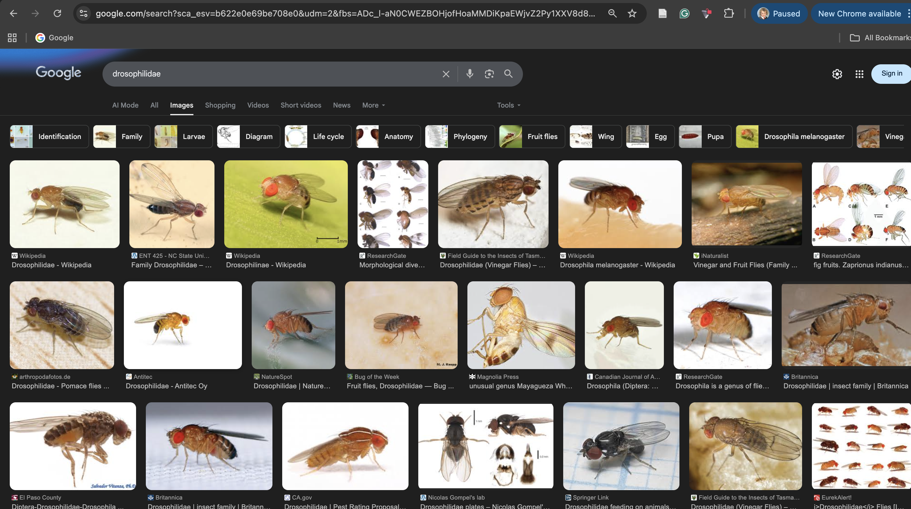
and Tephritidae 
The fruit fly families.
- Drosophilidae — what most people think of as “fruit flies”
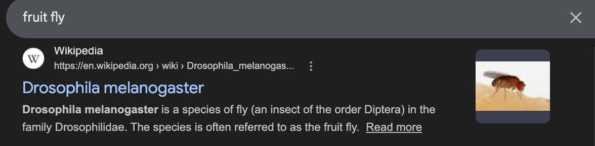
- Tephritidae are less common, but very important agriculturally.
Background
- Sometimes called peacock flies due to their colorful patterns.
- Most Tephritids cause economic damage to crops because some feed on living tissue;targeting fresh fruits, vegetables, and plants.
- They use their ovipositor to lay eggs; which then develop into larvae in many different fruits.
Tephritids: The Medfly
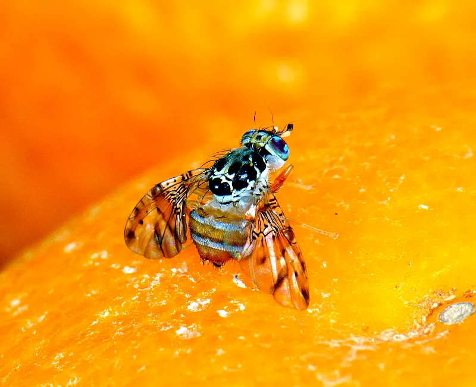
- Mediterranean Fruit Fly (Medfly) is a common Tephritid and ranked first among economically important fruit flies.
- Originated in sub-Saharan Africa, but tolerates cooler climates better than most tropical fruit flies.
- Eradication efforts are extremely costly.
Quiz question time - Round 1!
- It is now time for the first round of the quiz!
Here are some tips and rules:
Answer the questions as you go along, then click Submit.
For each question, you will be told if your answer is incorrect or correct, do not try again - this is cheating.
Do not refresh the page, this will reset everything and is cheating.
When you have answered all questions, at the bottom of your page, your total points for this round will be on your screen. Please share this, and do not cheat!!
How I have been understanding Host–microbe symbioses in Tephritid pest insects
- Surface sterilisation of Medflies.
- Dissection of Medfly guts.
- Microbial analysis techniques.
What is surface sterilisation?
- Surface sterilisation removes microbes present on the external surface of the Medfly.
- The aim is to analyse the internal microbiota (gut microbiota), not whatever it has been chilling around in.
- If we do not wash the flies, DNA from environmental microbes may contaminate the sample.
Choosing a sterilisation method.
- Ethanol
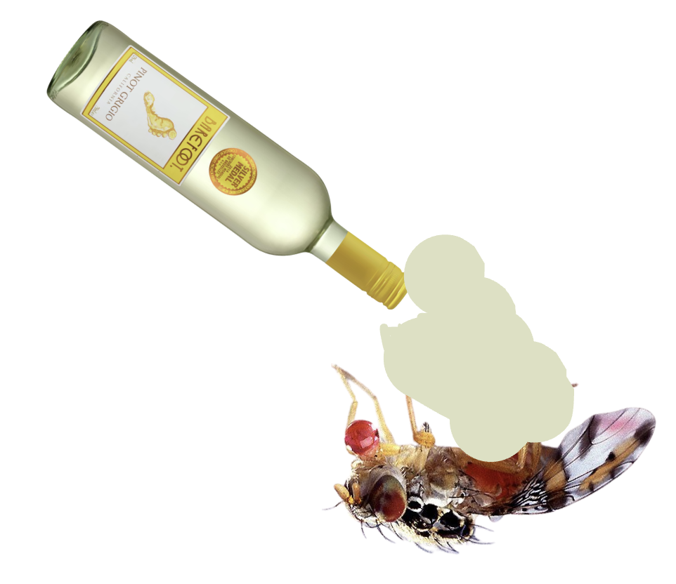
- Bleach
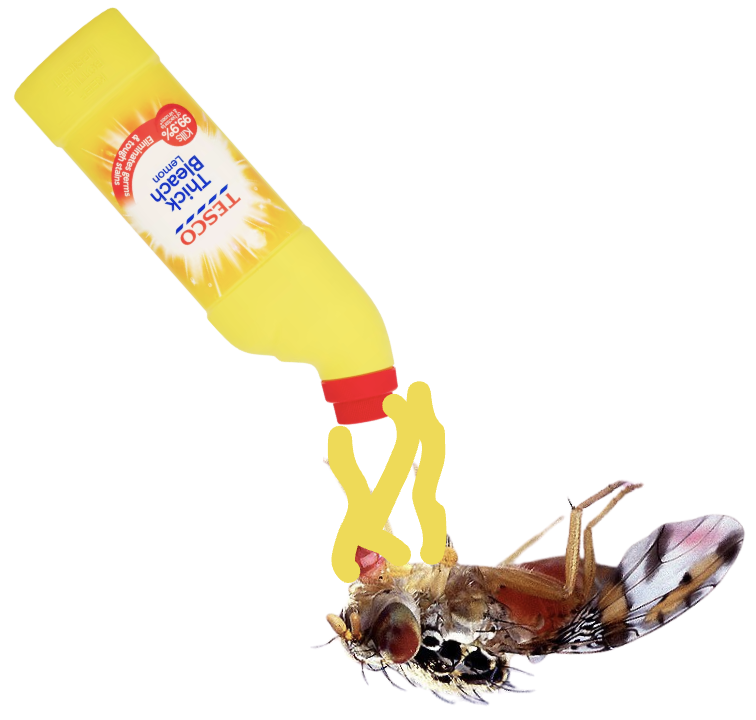
- Both ethanol and bleach will kill microbes.
- However, bleach denatures DNA, while ethanol does not. So if ethanol is used alone, DNA from external microbes may remain, even if the microbes are dead.
- For example, if a whole fly was surface sterilised with ethanol, and the whole fly was homogenised, the external DNA would also most likely be in the sample.
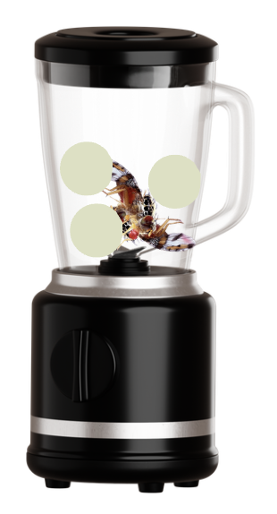
Evidence from other studies.
A study by Binetruy et al. (2019) evaluated sterilisation methods in ticks
Their results showed that
- Ethanol based sterilisation did not fully remove external bacterial DNA.
- Bleach based methods were more effective at elimninating external contamination.
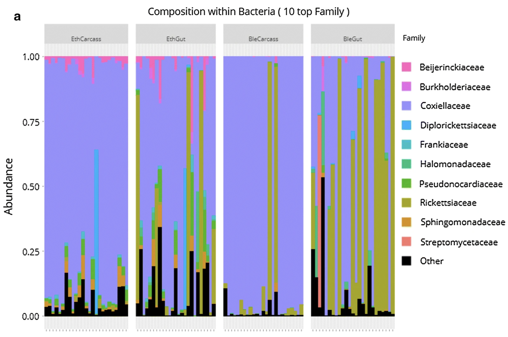
Choosing a protocol
- After using the above paper as a source, we developed a protocol that would involve testing the sterility of the fly using incubated LB plates.
We decided on a set protocol:
- 1 min 30 sec bleach in bijou tube, mixing on vortex, then remove.
- 30 sec PBS, mixing on vortex, then remove.
- 30 sec PBS, mixing on vortex, then remove.
- 30 sec PBS, mixing on vortex, then remove.
The first trials:
- We found that leaving the fly in bleach for longer than 1:30 – 2:00 minutes may break appendages, the fly wil burst open!
- The wash must be under 1 min to avoid gut exposure ruining experiment
- In a lot of cases, there was trouble actually getting the flies out of the bijou tube.


Attempt after attempt:
So after many trials and errors:
- We eventually found that using filter paper to on top of the bijou tube, allowing the solution to drain through so the flies could be more easily picked up, actually resulted in having sterile flies, and clean plates.
Quiz question time - Round 2!
- It is now time for the second round of the quiz!
Here are some tips and rules:
Answer the questions as you go along, then click Submit.
For each question, you will be told if your answer is incorrect or correct, do not try again - this is cheating.
Do not refresh the page, this will reset everything and is cheating.
When you have answered all questions, at the bottom of your page, your total points for this round will be on your screen. Please share this, and do not cheat!!
Whole Flies vs Gut Samples
- In insect microbiota studies, researchers often differ in whether they analyse the whole gut or the entire fly.
- Some studies report no major differences between these approaches.
- However, this may depend on the sequencing approach used.
Limitations of Whole-Fly Sampling
- Whole-fly samples may mask the true gut microbiota, because bacteria from other tissues are also included.
- Even after surface sterilisation, microbes can remain in tissues such as the reproductive organs.
- In Tephritid flies, studies have shown differences between the microbiota of the gut and reproductive tissues.
- For this reason, we focused specifically on gut samples rather than whole flies.
Gut Dissections in the lab.
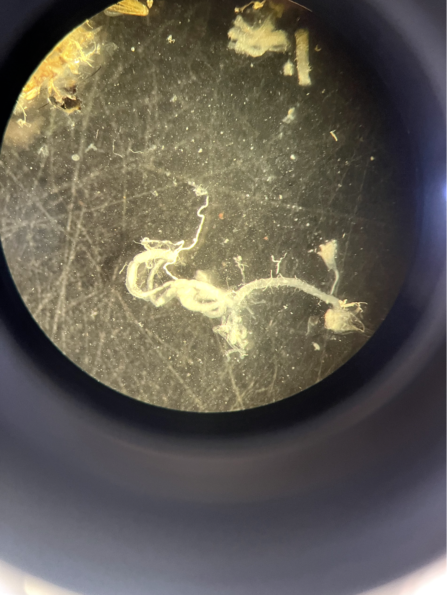
The Medfly gut.
- Foregut
- Midgut
- Hindgut
Mechanisms of the Medfly gut.
- It has the foregut, midgut, and hindgut.
- During metamorphosis, the entire larval gut is broken down and replaced with a newly formed adult gut.
- This can influence forms of transmission throughout life stages.
Mixed modes of microbial transmission
- There are 3 modes of microbial transmission.
- Vertical transmission – microbes are passed directly from parent to offspring (via the egg surface or reproductive tissues).
- Horizontal transmission – microbes are acquired from other individuals (via mating, shared feeding sites etc).
- Environmental transmission – microbes are acquired from the surrounding environment (host fruit, soil, or artificial diet substrate in the lab).
- All of these together are referred to as mixed modes of microbial transmission.
Microbial transmission in Medfly
- In Medfly, it has been suggested that horizontal transmission occurs.
- Larvae have been shown to shed bacteria into the fruit substrate, and other larvae may acquire those microbes from the shared environment (the fruit).
- However, similar to vertical transmission, this has not been directly proven.
- This could be tested using a high-throughput sequencing approach to identify identical bacterial strains shared between hosts.
- The current data on transmission in Medfly doesn’t truly show that bacteria between hosts are identical.
Quiz question time - Round 3!
- It is now time for the third round of the quiz!
Here are some tips and rules:
Answer the questions as you go along, then click Submit.
For each question, you will be told if your answer is incorrect or correct, do not try again - this is cheating.
Do not refresh the page, this will reset everything and is cheating.
When you have answered all questions, at the bottom of your page, your total points for this round will be on your screen. Please share this, and do not cheat!!
Microbial Analysis - Diversity Metrics
- In analysis of the microbiota, there are two diversity metrics. These are Alpha Diversity and Beta Diversity.
- Alpha diversity, is diversity within a sample. It how diverse or rich your microbiome sample is in terms of different microorganisms.
- Beta Diversity, is a measure of dissimilarity or similarity between two different communities.
- In this lab presentation, we will focus on Beta Diversity, and specifically a method called Bray-Curtis Dissimilarity
Diversity Metrics - Bray Curtis Disimiliarity
- Bray-Curtis Dissimilarity can be described as a statistic used to quantify the dissimilarity in composition of species between two different sites.
- Mathematically, it works using species abundance.
- It works by a formula outputting a value between 0 and 1, with 0 meaning the sites are exactly the same, to very similar, and 1 being they are very dissimilar.
- The formula used in Bray-Curtis Dissimilarity is shown below:
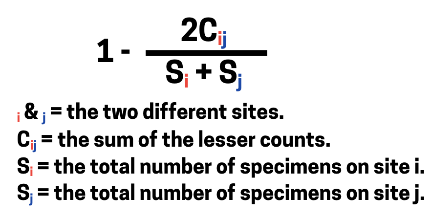
Bray Curtis in action - 16S Darrington Study
- Lets go through an example of how Bray-Curtis Dissimilarity works, using data from Darrington et al. (2022).
- This study investigates the composition of the medfly gut microbiome, looking at lab flies using different artificial substrates, and wild flies using different fruits.
Microbial communities were characterised using 16S rRNA gene sequencing, allowing the relative abundance of bacterial taxa in each sample to be quantified.
Bray Curtis Dissimilarity Example
- Because Bray–Curtis dissimilarity compares the composition of two communities, we will focus on two larval medfly samples.
These samples come from larvae developing in different host fruits:
Argan
Peach
- We will compare the bacterial community composition of these two samples to calculate their Bray–Curtis dissimilarity
Calculating Bray Curtis Dissimilarity
Sample 1 - Medfly from Morocco (Argan 🌰)
Bacterial composition (relative proportions):
| Bacterium | Proportion |
|---|---|
| Klebsiella | 0.75 |
| Pantonea | 0.15 |
| Commensalibacter | 0.10 |
Sample 2 - Medfly from Greece (Peach 🍑)
Bacterial composition (relative proportions):
| Bacterium | Proportion |
|---|---|
| Klebsiella | 0.25 |
| Pantonea | 0.50 |
| Serratia | 0.05 |
| Spinghobacterium | 0.15 |
Breaking down the equation
Cij = the sum of lower counts found at both sites
Cij = 0.25 + 0.15 = 0.4
The only bacteria these two samples have in common are Klebsiella and Pantonea, the lowest values of which are 0.25 of Klebsiella (from the peach samples), and 0.15 of Pantonea (from the argan samples).
Si = total number on site i - Argan
Si = 0.75 + 0.15 + 0.1 = 1
Sj = total number on site j - Peach
Sj = 0.25 + 0.5 + 0.05 + 0.15 = 1
Now that we have:
\[ C_{ij} = 0.4 \\ \]
\[ S_i = 1 \\ \]
\[ S_j = 1 \]
The Bray-Curtis formula is:
\[ BC_{ij} = 1 - \frac{2 C_{ij}}{S_i + S_j} \]
Plugging in the values:
\[ BC_{ij} = 1 - \frac{2*0.4}{1 + 1} \]
Calculate the division:
\[ \frac{0.8}{2} = 0.4 \]
Finally:
\[ BC_{ij} = 1 - 0.4 = \mathbf{0.6} \]
Interpreting the results
- Using this formula we have worked out the Bray-Curtis Dissimilarity of the two Medfly microbiotas from Argan and Peach to be 0.6.
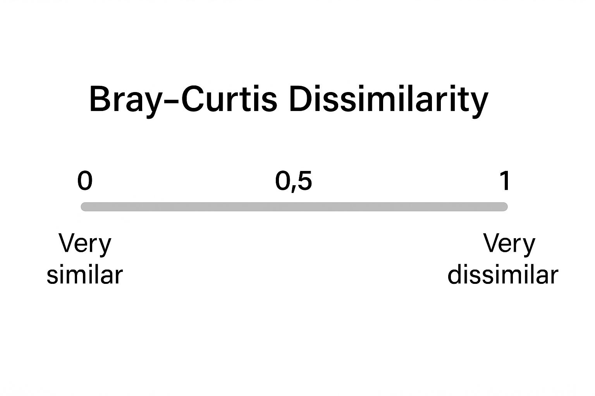
- A value of 0.6 indicates moderate dissimilarity between the two samples.
Analysis Methods – Visualising Results
- NMDS (Non-metric Multidimensional Scaling) is an ordination technique used to visualise similarities or differences between samples.
- It reduces high-dimensional data (e.g. microbial abundances across many sites) into a 2D or 3D space, making complex patterns easier to interpret.
- Unlike linear methods, NMDS is non-linear.
- It does not preserve exact distances between samples, but instead preserves the rank order of dissimilarities.
- This makes NMDS particularly useful for ecological and microbial community datasets, where relationships between samples are often complex and non-linear.
Analysis of Microbiota Data – NMDS Workflow
1. Calculate a dissimilarity matrix
Use a dissimilarity metric (e.g. Bray–Curtis) to quantify differences in microbial composition between all sample pairs.
2. Rank the dissimilarities
Convert the dissimilarity values into ranked distances, from most similar to most dissimilar.
3. Initialise sample positions
Place samples at random coordinates in a reduced 2D (or 3D) space.
4. Calculate Euclidean distances
Measure the Euclidean distances between all points in this reduced space.
5. Rank the Euclidean distances
Rank these distances and compare them with the original dissimilarity ranks.
6. Evaluate the fit (Kruskal’s stress)
Calculate stress, which measures how well the reduced-space configuration preserves the ranked dissimilarities.
7. Iteratively minimise stress
Adjust point positions repeatedly to reduce stress and improve the fit.
8. Select the best solution
The configuration with the lowest stress is chosen as the NMDS solution.
9. Visualise the ordination
Plot the NMDS scores in 2D or 3D, where closer points represent more similar microbial communities.
How does NMDS work? Pin the fruit on the Medfly!!
- For this step, please may I have a volunteer!
The easy way to do NMDS in R
We can perform NMDS in R using two key packages:
- vegan – ecological analysis tools (including NMDS)
- tidyverse – data manipulation and plotting
- First, create a simple dataframe representing bacterial abundances across samples.
bacteria_df <- data.frame(
Klebsiella = c(0.75, 0.25, 0.5, 0.7, 0.3, 0.75),
Pantoea = c(0.15, 0.50, 0.05, 0.03, 0.02, 0.05),
Commensalibacter = c(0.10, 0.02, 0.01, 0.01, 0.01, 0.01),
Serratia = c(0.01, 0.05, 0.01, 0.01, 0.02, 0.01),
Sphingobacterium = c(0.01, 0.15, 0.01, 0.02, 0.01, 0.01),
Acinetobacter = c(0.02, 0.01, 0.01, 0.01, 0.50, 0.01)
)Running the NMDS analysis
We use the metaMDS() function from the vegan package.
Run 0 stress 6.486572e-05
Run 1 stress 9.99701e-05
... Procrustes: rmse 0.1235503 max resid 0.1706887
Run 2 stress 0
... New best solution
... Procrustes: rmse 0.1817255 max resid 0.2760432
Run 3 stress 9.174839e-05
... Procrustes: rmse 0.1258471 max resid 0.1796858
Run 4 stress 9.566269e-05
... Procrustes: rmse 0.1601103 max resid 0.2868857
Run 5 stress 8.707705e-05
... Procrustes: rmse 0.222662 max resid 0.2305474
Run 6 stress 9.963501e-05
... Procrustes: rmse 0.1123288 max resid 0.1625459
Run 7 stress 9.946001e-05
... Procrustes: rmse 0.2308261 max resid 0.3875361
Run 8 stress 9.870598e-05
... Procrustes: rmse 0.1495498 max resid 0.1821377
Run 9 stress 9.212423e-05
... Procrustes: rmse 0.1554093 max resid 0.3348278
Run 10 stress 9.40324e-05
... Procrustes: rmse 0.1569887 max resid 0.3388907
Run 11 stress 0
... Procrustes: rmse 0.1257571 max resid 0.1817855
Run 12 stress 3.024847e-05
... Procrustes: rmse 0.1291558 max resid 0.2677251
Run 13 stress 9.363333e-05
... Procrustes: rmse 0.1154954 max resid 0.2450234
Run 14 stress 0.001605364
Run 15 stress 2.375618e-05
... Procrustes: rmse 0.1099525 max resid 0.2397743
Run 16 stress 0
... Procrustes: rmse 0.09033662 max resid 0.127193
Run 17 stress 0.001760233
Run 18 stress 9.888115e-05
... Procrustes: rmse 0.1318091 max resid 0.1594292
Run 19 stress 0.0004031812
... Procrustes: rmse 0.173891 max resid 0.2222812
Run 20 stress 0
... Procrustes: rmse 0.1646967 max resid 0.2610556
Run 21 stress 9.844749e-05
... Procrustes: rmse 0.0665184 max resid 0.103768
Run 22 stress 0
... Procrustes: rmse 0.1308872 max resid 0.218318
Run 23 stress 0.001115559
Run 24 stress 8.280122e-05
... Procrustes: rmse 0.15495 max resid 0.3333978
Run 25 stress 4.171787e-05
... Procrustes: rmse 0.07267199 max resid 0.08993438
Run 26 stress 9.591763e-05
... Procrustes: rmse 0.1537266 max resid 0.21318
Run 27 stress 9.839982e-05
... Procrustes: rmse 0.1827981 max resid 0.1930491
Run 28 stress 9.820407e-05
... Procrustes: rmse 0.1765368 max resid 0.2327211
Run 29 stress 0
... Procrustes: rmse 0.1997335 max resid 0.3406124
Run 30 stress 9.267936e-05
... Procrustes: rmse 0.1381877 max resid 0.278159
Run 31 stress 0
... Procrustes: rmse 0.1619841 max resid 0.2841112
Run 32 stress 8.743604e-05
... Procrustes: rmse 0.233239 max resid 0.3879028
Run 33 stress 8.994962e-05
... Procrustes: rmse 0.2240365 max resid 0.3862381
Run 34 stress 5.920958e-05
... Procrustes: rmse 0.1474016 max resid 0.2286753
Run 35 stress 9.489985e-05
... Procrustes: rmse 0.2153303 max resid 0.3344609
Run 36 stress 8.10909e-05
... Procrustes: rmse 0.1390315 max resid 0.2031614
Run 37 stress 9.068423e-05
... Procrustes: rmse 0.07844125 max resid 0.1217538
Run 38 stress 9.739732e-05
... Procrustes: rmse 0.1099081 max resid 0.1998309
Run 39 stress 8.131413e-05
... Procrustes: rmse 0.1747711 max resid 0.2775105
Run 40 stress 8.858026e-05
... Procrustes: rmse 0.2336187 max resid 0.3879511
Run 41 stress 8.909386e-05
... Procrustes: rmse 0.1538121 max resid 0.3291407
Run 42 stress 0
... Procrustes: rmse 0.1767445 max resid 0.2808325
Run 43 stress 9.412335e-05
... Procrustes: rmse 0.2295991 max resid 0.3873236
Run 44 stress 9.994145e-05
... Procrustes: rmse 0.090949 max resid 0.1776169
Run 45 stress 9.28391e-05
... Procrustes: rmse 0.177823 max resid 0.2582435
Run 46 stress 6.13629e-05
... Procrustes: rmse 0.08909384 max resid 0.1646301
Run 47 stress 8.998534e-05
... Procrustes: rmse 0.2245841 max resid 0.3692716
Run 48 stress 9.167288e-05
... Procrustes: rmse 0.2313167 max resid 0.3876153
Run 49 stress 8.94276e-05
... Procrustes: rmse 0.1921577 max resid 0.3744142
Run 50 stress 0
... Procrustes: rmse 0.04887819 max resid 0.09112554
Run 51 stress 0
... Procrustes: rmse 0.1221983 max resid 0.1665101
Run 52 stress 8.961231e-05
... Procrustes: rmse 0.1641862 max resid 0.2807655
Run 53 stress 1.146806e-05
... Procrustes: rmse 0.1892065 max resid 0.296848
Run 54 stress 0
... Procrustes: rmse 0.1968215 max resid 0.3057659
Run 55 stress 0
... Procrustes: rmse 0.08106661 max resid 0.1661451
Run 56 stress 0.0001205876
... Procrustes: rmse 0.1759763 max resid 0.2227468
Run 57 stress 9.417696e-05
... Procrustes: rmse 0.2313147 max resid 0.3876078
Run 58 stress 8.225808e-05
... Procrustes: rmse 0.2192488 max resid 0.2250373
Run 59 stress 6.057974e-05
... Procrustes: rmse 0.05728186 max resid 0.1020232
Run 60 stress 0.0001157827
... Procrustes: rmse 0.2191977 max resid 0.2238843
Run 61 stress 9.343238e-05
... Procrustes: rmse 0.2348867 max resid 0.3881207
Run 62 stress 9.278516e-05
... Procrustes: rmse 0.09831036 max resid 0.1721796
Run 63 stress 0.0004362072
... Procrustes: rmse 0.217088 max resid 0.2394896
Run 64 stress 9.435168e-05
... Procrustes: rmse 0.2341255 max resid 0.3880182
Run 65 stress 9.938344e-05
... Procrustes: rmse 0.1541951 max resid 0.3045977
Run 66 stress 0
... Procrustes: rmse 0.09276199 max resid 0.172537
Run 67 stress 9.129695e-05
... Procrustes: rmse 0.1600525 max resid 0.187155
Run 68 stress 8.056793e-05
... Procrustes: rmse 0.1588618 max resid 0.2382281
Run 69 stress 7.510868e-05
... Procrustes: rmse 0.1762648 max resid 0.2549528
Run 70 stress 0
... Procrustes: rmse 0.1783726 max resid 0.3033686
Run 71 stress 6.268601e-05
... Procrustes: rmse 0.1302461 max resid 0.1764912
Run 72 stress 8.861047e-05
... Procrustes: rmse 0.06061704 max resid 0.08221365
Run 73 stress 0.0005490831
Run 74 stress 0
... Procrustes: rmse 0.130652 max resid 0.1958929
Run 75 stress 9.916776e-05
... Procrustes: rmse 0.2347557 max resid 0.3881114
Run 76 stress 9.931897e-05
... Procrustes: rmse 0.1263824 max resid 0.1470638
Run 77 stress 9.35211e-05
... Procrustes: rmse 0.2139998 max resid 0.3836121
Run 78 stress 0.2761341
Run 79 stress 0.00093586
Run 80 stress 5.818915e-05
... Procrustes: rmse 0.2268408 max resid 0.3699801
Run 81 stress 8.324511e-05
... Procrustes: rmse 0.1555068 max resid 0.3351046
Run 82 stress 8.522359e-05
... Procrustes: rmse 0.1565863 max resid 0.3379358
Run 83 stress 1.37409e-05
... Procrustes: rmse 0.1761369 max resid 0.3048686
Run 84 stress 0.2761337
Run 85 stress 4.459499e-06
... Procrustes: rmse 0.1908676 max resid 0.2944839
Run 86 stress 9.825301e-05
... Procrustes: rmse 0.2353861 max resid 0.3881853
Run 87 stress 4.113201e-05
... Procrustes: rmse 0.2313685 max resid 0.3751567
Run 88 stress 0.276134
Run 89 stress 9.942329e-05
... Procrustes: rmse 0.1918676 max resid 0.3742672
Run 90 stress 0
... Procrustes: rmse 0.2241972 max resid 0.3762568
Run 91 stress 9.111607e-05
... Procrustes: rmse 0.213401 max resid 0.363279
Run 92 stress 3.466838e-05
... Procrustes: rmse 0.1575742 max resid 0.2928387
Run 93 stress 2.475336e-05
... Procrustes: rmse 0.1859286 max resid 0.3162426
Run 94 stress 2.016125e-05
... Procrustes: rmse 0.1879269 max resid 0.3069427
Run 95 stress 9.054436e-05
... Procrustes: rmse 0.1563632 max resid 0.3373924
Run 96 stress 9.049884e-05
... Procrustes: rmse 0.1528525 max resid 0.3126789
Run 97 stress 9.935941e-05
... Procrustes: rmse 0.2282231 max resid 0.3870802
Run 98 stress 9.792501e-05
... Procrustes: rmse 0.2284203 max resid 0.3871228
Run 99 stress 8.54287e-05
... Procrustes: rmse 0.196146 max resid 0.3217689
Run 100 stress 9.971439e-05
... Procrustes: rmse 0.1011971 max resid 0.1543436
*** Best solution was not repeated -- monoMDS stopping criteria:
9: no. of iterations >= maxit
88: stress < smin
3: stress ratio > sratmaxKey arguments
distance = "bray": Bray–Curtis dissimilarity
k= 2: reduce the data to two dimensions
trymax = 100: increase random starts to find a stable low-stress solution
Extracting NMDS scores
Extract the site scores (coordinates of samples in ordination space).
Add labels describing the samples.
Visualising the NMDS results
We can plot the ordination using ggplot2.
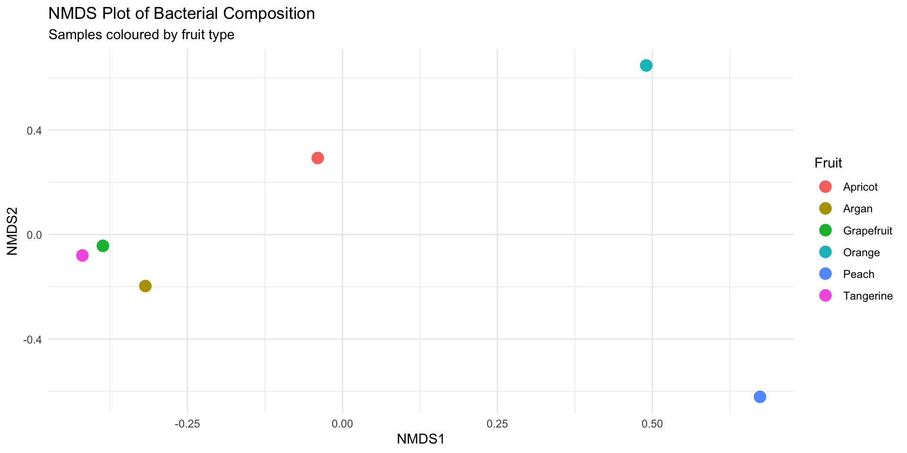
Katie Millar | PhD Student